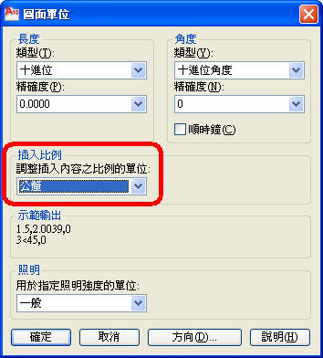

■關於 圖面單位(UNITS) 中的 插入比例 是控制插入目前圖面中的圖塊和圖面的測量單位。並不是更改圖面單位(圖面單位須自行定義)，這部份常常有人搞錯，因為圖面單位(UNITS)的插入比例關係，會影響插入圖塊時的比例係數。

如果圖塊或圖面建立時使用的單位與該選項指定的單位不同，則在插入這些圖塊或圖面時，將對它們按比例調整比例。插入比率是原始圖塊或圖面使用的單位與目標圖面使用的單位之比。
*例1:一般圖面的 插入比例 是由使用者決定，當你定義了圖面單位(UNITS)的 插入比例 後，系統會自動計算比例係數。
A.dwg(原始來源圖面) >> 圖面單位(UNITS)的插入比例為 公分
B.dwg(目標圖面) >> 圖面單位(UNITS)的插入比例為 公釐
當 B.dwg (目標圖面) 插入 A.dwg (原始來源圖面)時，此時比例係數則為 10
也就是說 插入INSERT 進來的 A.dwg 的圖面物件，在 B.dwg 的圖面中會自動放大10倍
*例2:一般圖面的 插入比例 是由使用者決定，當你定義了圖面單位(UNITS)的 插入比例 後，系統會自動計算比例係數。
A.dwg(原始來源圖面) >> 圖面單位(UNITS)的插入比例為 無單位
B.dwg(目標圖面) >> 圖面單位(UNITS)的插入比例為 無單位
當 B.dwg (目標圖面) 插入 A.dwg (原始來源圖面)時，此時比例係數則為 1
也就是說 插入INSERT 進來的 A.dwg 的圖面物件，在 B.dwg 的圖面中因為沒有自動換算所以並不會放大。
■實例演練：設定了正確的 插入比例單位，有助於套圖作業的效率提升，利用AutoCAD來幫我們自動換算，讓我們的工作是辦公唄。
建築圖:圖面單位(UNITS) 中的 插入比例 >> 公分
結構圖:圖面單位(UNITS) 中的 插入比例 >> 公釐